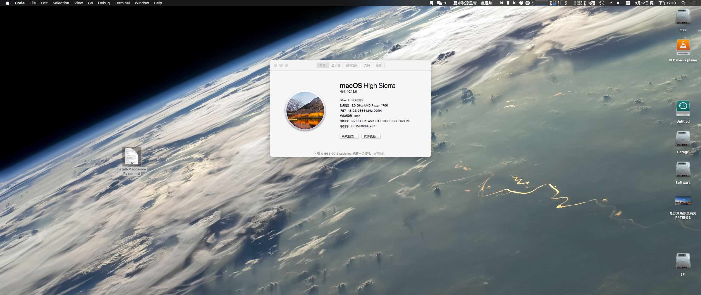

结合本鸽子逛了三个月英国超市的经历，整理了一下来英国建议带的东西 && 不建议带的东西，针对不建议带的东西列出了购买方式
英国落地日记
落地英国一个月的老鸽子又回来了~~~这可能又是一篇巨长的博文，打算记录下在英国这一年的生活，内含BRP、GP、银行卡等攻略，或许还能放个Vlog？（咕咕咕）
Jupyter Notebook 食用指南
延期开学的咸鱼在家无事可做，打算刷刷 MOOC 掉点头发，记笔记的时候发现 OneNote 没法记录代码，缩进高亮行号都没有，于是就想到了一直在电脑里躺尸的 Jupyter Notebook，记录下安装及食用的方法
Java与C的环境变量配置
昨天又把系统重装了，升级到了2004，本以为能凭借记忆配置好Java和C的环境变量，然鹅最后还是找了百度，所以就再记录一遍吧
添加 Windows Terminal 至右键菜单
Windows Terminal 已经在微软应用商店上架了，所以我把终端从 Fluent Terminal 换成了 Windows Terminal，记录一下将它添加到右键菜单的过程
Win10重装指北
写一个Win10重装教程，另外偷个懒，把office的安装教程也合进来了hhh
英国留学后续日志
今天终于等到了格拉的uncon，开一贴记录一下换取uncon及后续签证申请的相关事宜。另外格拉上个月正式宣布部分专业延期开学至21年1月，CS院的所有专业都包含在内，所以下半年就要上家里蹲大学了，慢慢更
过气学长的碎碎念
交完毕设就想写，咕到了现在，主要给学弟学妹说一下大四大五的流程和注意事项，大四部分内容可能和实际有出入，年代久远记不清了
ITX装机日记
本鸽子毕业了，熬过了毕业设计，虽然做的很垃圾，但是终于和建筑学永别了，来装一台ITX庆祝一下（手动狗头）

Next升级+Mac迁移
写博客到现在已经快一年了，Next主题也更新了好多版本，新增的pjax真的是太香了，果断更新。顺便把Hexo迁移到mac上面来
Hexo Next 7.7 双语切换
一年前通过在Google的疯狂查找和尝试，实现了在7.1版本的Next主题上进行中英双语的切换。但是Bug多多（切换到英文界面后点击关于、归档等标签还会跳转回中文界面），而我本人又是拖延症+懒癌晚期，一直没有尝试修复。最近借着给Next主题升级的机会顺便解决这个问题。折腾了两天，终于成功实现了理想中的中英双语切换效果，搞得毕设都没怎么做。
Github无法加载图片解决方法
昨天上 Github 添加图片的时候发现图片不能正常加载了，访问全球最大的同性交友网站没有图片怎么能行（滑稽）。查了一下发现IP又挂了，修改 Hosts 后成功解决，此方法同样适用于 Github 无法访问的问题
荣耀 magic watch 表盘制作
趁着还没开学给老爸的 Magic Watch 做了个表盘，甲方唯二的要求就是：字大+醒目

笔记本改造计划
准备折腾一下笔记本，毕竟不用做建筑狗了，这个笔记本是当年高考完暑假买的，年少无知买了个商务本，众所周知，商务本=性能垃圾+贵，所以大二配完台式后给笔记本装了个Fedora，然后就一直在吃灰，这几天升级Fedora的时候崩了，但是今年9月要去国外读书，笔记本还是得用。计划安装 Win10 LTSC，Ubuntu 18.04 LTS，Macos Mojave三系统，把机械硬盘换成固态，升级网卡
英国CS转专业申请指北
申请季正式结束，网站咕咕咕了快半年，是时候开始一波高产了。开一贴讲一下转专业申请英国 CS MSc 的那些事
前言
我本科的专业是建筑学，高考报志愿的时候脑子可能进了点水，把计算机的志愿放在了建筑学的后面，然后就稀里糊涂的上了这个五年制的天坑专业，还白白搭上了一个暑假的时间学素描，因为建筑学入学还要加试美术，现在想想，这个暑假拿来学 C 学 Java 它不香吗？
（当事人：现在就是后悔，非常后悔）
这里本来打了很多转专业的起因经过，想了想还是略去不表吧，总之如果你是一只学建筑学的很痛苦的建筑狗且对 CS 有一定的兴趣，希望这篇文章能够帮到你
这篇文章只针对转换课程，即 conversion 课程，此类课程对申请人的背景要求较低，针对本科非CS专业的申请人开设，部分学校要求提供数学能力证明以及STEM背景。至于大佬们可以试试直接申请科班的 CS MSc ，我水平太菜 & 担心毕不了业所以没有尝试申请科班的课程
另外我也会简单说一下留学申请DIY的那些事，出国读书真的蛮不容易的，从语言到文书再到申请，一路上充满了想赚你钱的人，作为2020年即将被消灭的贫困人口，DIY就是最好的选择，既能省钱，也能提升自己的能力
PTE不完全指南
我12月27日在武汉湖北大学考场考完了PTE，等了三天之后出了成绩，成绩单在下面，顺利达到格拉的入学要求。记录一下备考的经验，祝大家早日和语言考试分手（雅思就是个死渣男）

软件整理
记录下平常用的软件和官网的链接，免得重装系统之后还得重新一个一个找2333333
Ryzen Hackintosh
折腾了三天，终于把MacOs成功安装到了台式机上，某宝上买了一个拆机苹果网卡，基本完美，安装系统为MACOS HIGH SIERRA(10.13.6 17G65)，这篇文章就是在MacOS上写的（嚣张.jpg）

在Ryzen上安装Hackintosh的方法是Vanilla，是通过修改config.plist文件来实现黑苹果的，毕竟苹果使用的全是Intel的处理器，所以此文章的方法也仅支持AMD的部分CPU
V2Ray
自从P站无法访问后就一直想写个V2Ray的教程，然鹅拖延症加懒癌晚期到现在才开始写emmm，虽然民间一直流传有上P站的各种神功，但网速实在感人而且指不定那天就挂掉了，另外如果你不想看这么麻烦的教程的话可以直接移到文章最后，有懒人大礼包 **敲黑板！！！请将工具用于正当学习用途！！！遵守国家相关法律法规！！！**
Grasshopper
把大二到现在攒下来的用来画（shui）分析图的Grasshopper电池做一下汇总，并记录一下简易使用方法供建筑狗使用，感兴趣的话为何不尝试一下转行程序猿呢（~~劝退~~）
Grasshopper简介
Grasshopper是Rhino中的一款参数化工具，可以看作一种可视化编程语言，目前已经内置在Rhino6中，Rhino5需要单独安装，建议使用Rhino6，下载地址为Rhino官网。grasshopper虽然是Rhino的一款插件，但它自身也有很多插件可用，如Ladybug、ELK等分析工具，可以去Food4Rhino搜索并下载相应插件
PTE题型
被雅思恶心到了（~~口语万年5.5~~），转战PTE，开个坑记录下PTE的题型，文章的题型顺序是按照考试的时间先后顺序排列的。另外[送上PTE官网](https://pearsonpte.com/)，可以在官[这里](https://pearsonpte.com/the-test/who-accepts-it/)查询下自己想申请的学校接不接受PTE成绩，另外也可以到学校官网查询，例如我要申请的UCD是要达到总分63小分不低于59，对应雅思就是总分6.5小分6.0的水平，但是PTE是全机器判卷，排除掉了人为因素的影响，更为客观，AI才是未来~~
Hexo添加Google收录
目前网站还不能够通过搜索引擎搜索到，想要被搜到的话需要添加搜索引擎收录，这里以我添加的Google为例。
步骤包括：
- 生成站点地图
- 验证站点
Hexo Next 双语切换(7.1版本)
2020年更新：本方法bug太多，已弃坑，只针对7.1版本的Next主题。新方法请看Hexo Next 7.7 双语切换
以下为原内容
有英语版网站的需要，所以需要加一个双语切换功能，Hexo有对网站国际化的支持，即i18n，但存在缺陷，各种语言的文章会混杂在一起显得很混乱，需要稍加改造，步骤如下：
安装插件
安装Hexo国际化插件i18n，在博客根目录执行下列命令
1 | npm install hexo-generator-i18n |
Next主题美化(仅7.1版本)
2020年更新：此方法不适用于新版本Next主题！！！
博客主题更换为Next，本博文针对Next7.10主题，佛系填坑~
为了节省空间，图片我就不放了（才不是因为懒）
本篇内容包括：
- Next 主题的安装
- Next 主题的配置
- Next 主题深度美化
Markdown写作语法
编写博客需要使用Markdown，因此需要熟记语法规则，虽然Markdown语法比较少，但是一个一个查起来也是很蛋疼的（目录被标题的预览搞乱了。。。）
常用的Markdown语法规则有：
HEXO部署
Hexo博客踩坑指北
记录总结用HEXO和Github Page搭建博客时踩过的坑，主要包括以下
- Github Page 配置过程
- 本地软件配置
- HEXO 配置过程
- 主题美化
- 部署网站
Purpose
New
第一篇博客，搭网站踩坑踩到自闭